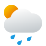

Stratosphere
1st Jan 2023
12.00 AM
Hourly
Daily
Past Weather
Air Quality

30º C
Rainy Storm Clouds
New York, USA
Wind Speed
Humidity
UV
Pressure
Cloud Coverage
Visibility
Day 01
30º C
Rainy Storm Clouds
Day 02
30º C
Rainy Storm Clouds
Day 03
30º C
Rainy Storm Clouds
Day 04
30º C
Rainy Storm Clouds
Speed of wind for the next 4 days
Chance of rain for the next 04 days
70%
Day 01
70%
Day 02
70%
Day 03
70%
Day 04
Temperatures for the last 7 days
Speed of wind for the last 7 days
Todays Air Quality
50
Good
Air Quality is considered satisfactory, and air pollution poses little to no risk
22 ppm
NO2(Nitrogen Dioxide)
Good
22 ppm
03(Ozone)
Good
22 ppm
CO(Carbon Monoxide)
Good
22 ppm
S02(Sulphur Dioxide)
Good